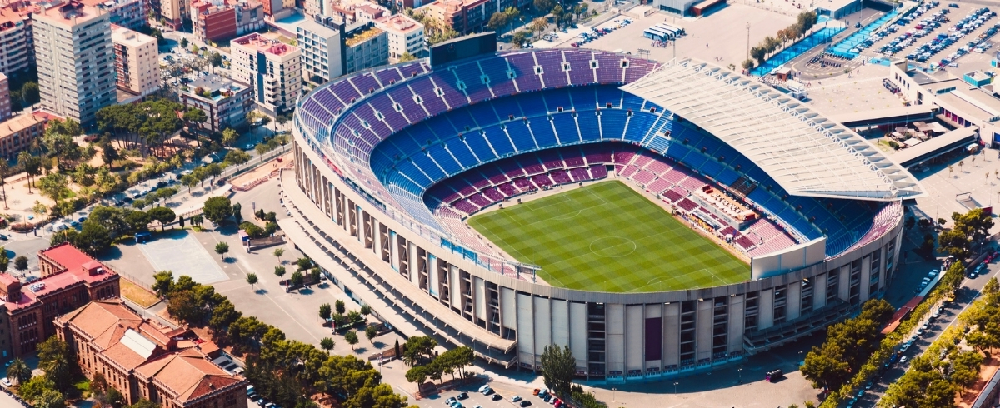

Antonio Toscano
Ultimo aggiornamento oggi
Al quinto posto troviamo il Camp Nouvoto:6.5
È uno stadio di calcio situato nella città di Barcellona, in Spagna. È il più grande stadio di calcio d'Europa e il secondo più grande al mondo, con una capacità di circa 99.000 spettatori. È la sede della squadra di calcio del Barcellona e ha ospitato numerose partite importanti, tra cui le finali della Coppa del Mondo FIFA del 1982 e della UEFA Champions League del 1999, 2009, 2011 e 2015. Il Camp Nou è anche una popolare attrazione turistica a Barcellona, con tour disponibili per visitare il campo, i musei e le aree circostanti.
Al quarto posto troviamo Estadio da Luzvoto:7

È uno stadio di calcio situato a Lisbona, in Portogallo. Ha una capacità di circa 65.000 spettatori ed è la sede della squadra di calcio SL Benfica. È stato inaugurato nel 2003 e ha ospitato numerose partite importanti, tra cui la finale della UEFA Champions League del 2014. L'Estadio da Luz è anche un importante centro sportivo e culturale a Lisbona, con una vasta gamma di attività e servizi per il pubblico.
Al terzo posto troviamo Amsterdam Arenavoto:8.5

È uno stadio di calcio situato ad Amsterdam, nei Paesi Bassi. È la sede della squadra di calcio AFC Ajax e ha una capacità di circa 54.000 spettatori. È stato inaugurato nel 1996 e ha ospitato numerose partite importanti, tra cui la finale della UEFA Champions League del 1998. L'Amsterdam Arena è anche un importante centro di intrattenimento ad Amsterdam, con concerti e altri eventi ospitati regolarmente. Inoltre, è dotato di moderne tecnologie e servizi per il pubblico, tra cui un tetto retrattile e un sistema di illuminazione avanzato.
Al secondo posto troviamo Alianz Arena voto:9

È uno stadio di calcio situato a Monaco di Baviera, in Germania, che ospita le squadre di calcio del Bayern Monaco e del TSV 1860 Monaco di Baviera. Inaugurato nel 2005, è noto per la sua architettura moderna e innovativa, con una copertura esterna composta da pannelli di LED che possono essere illuminati in diversi colori. Ha una capacità di circa 75.000 spettatori ed è dotato di tecnologie avanzate e servizi per il pubblico, tra cui connessione Wi-Fi gratuita, schermi ad alta definizione e un sistema di illuminazione interno che si adatta alla luce naturale durante il giorno. L'Allianz Arena è anche un importante centro di intrattenimento a Monaco di Baviera, con eventi ospitati regolarmente al di fuori delle partite di calcio.
Al primo posto troviamo Juventus Stadium voto:10

L'Allianz Stadium è uno stadio di calcio situato a Torino, in Italia, che ospita la squadra di calcio della Juventus. Inaugurato nel 2011, è noto per la sua architettura moderna e innovativa, con una copertura a forma di petali e una vasta gamma di servizi e tecnologie all'avanguardia. Ha una capacità di circa 41.000 spettatori e ospita anche eventi al di fuori delle partite di calcio.